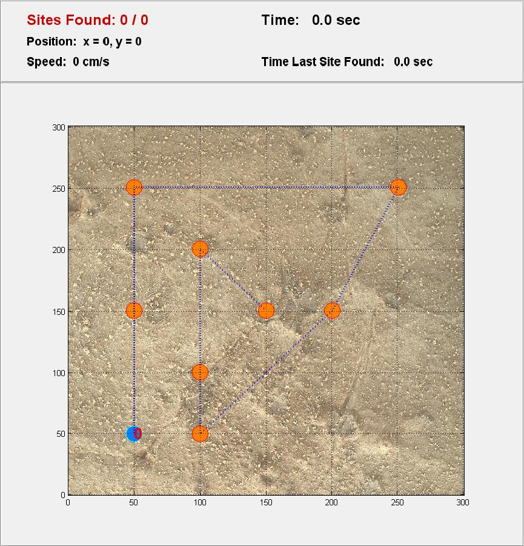
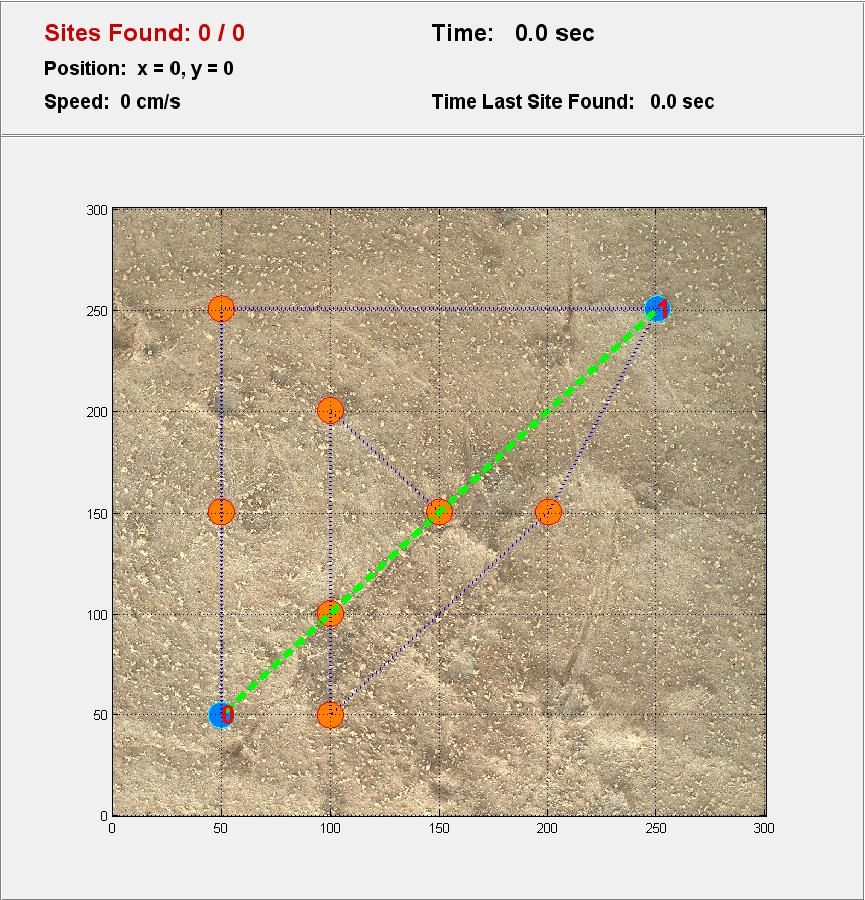
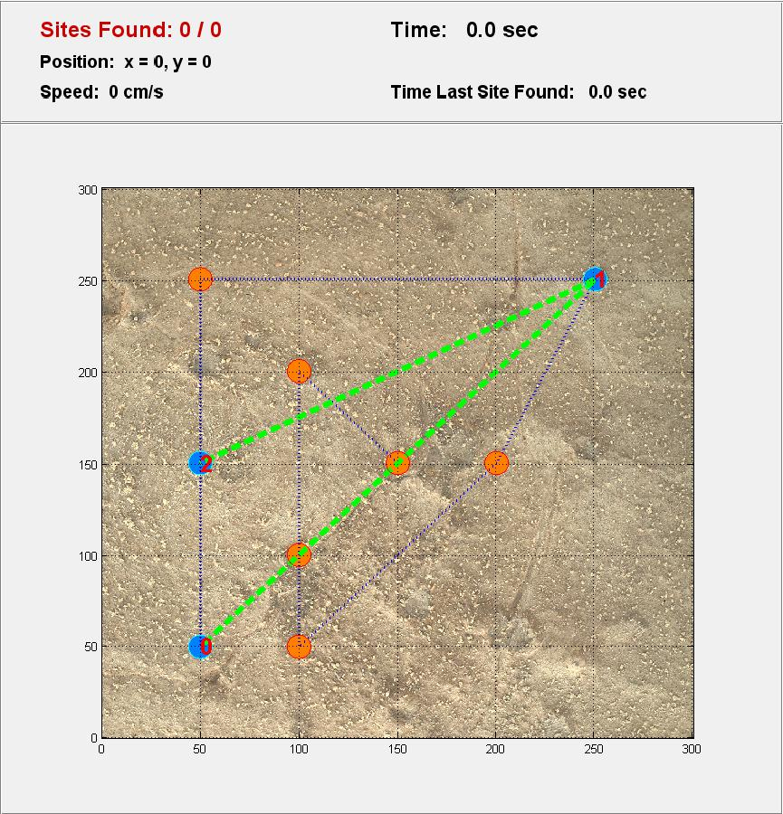
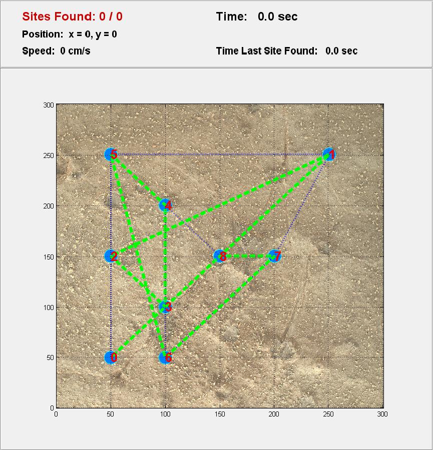
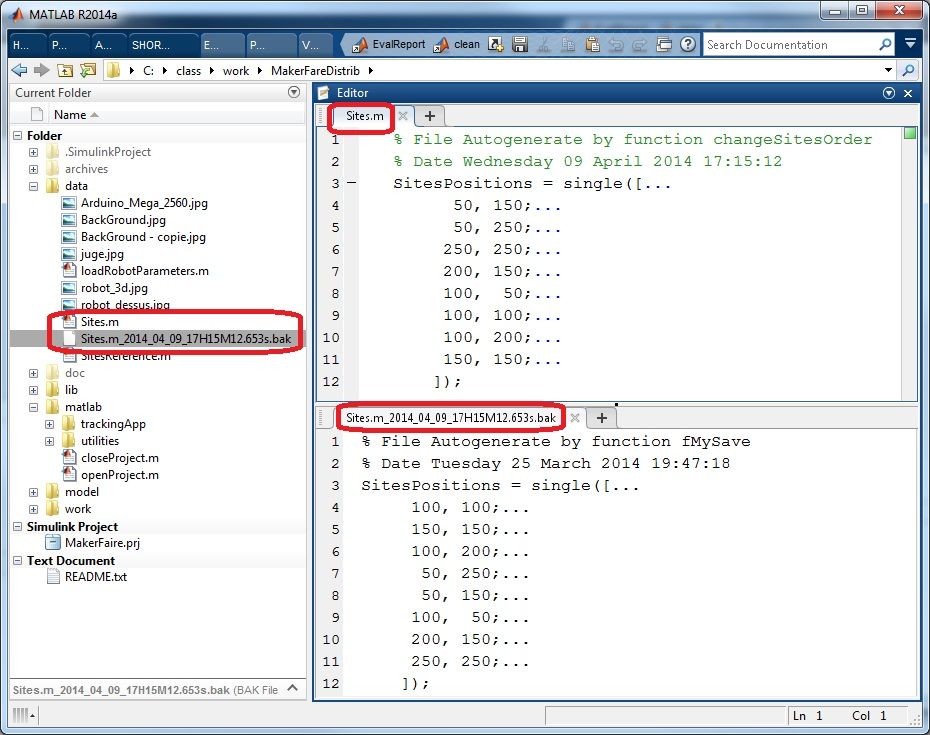

Contents
DESCRIPTION
La fonction changeOrderTargetPoint vous permet de changer graphiquement l'ordre de visite des sites
WORKFLOW
- Lancez la fonction
- Redéfinissez la trajectoire
- Sauvegardez la trajectoire
Etape 1 : Lancez la fonction
changeSitesOrder
Vous devriez voir la photo ci-dessous où :
- Le point bleu avec le chiffre rouge 0 désigne la position initiale du robot
- Les ronds oranges représentent les sites à visiter
- Le trait pointillé bleu représente la trajectoire originelle du robot

Etape 2 : Redéfinissez la trajectoire
Cliquez avec le bouton droit de la souris sur un des points orange pour définir le premier site à faire explorer au robot :

Cliquez de nouveau avec le bouton droit de la souris pour déterminer le prochain site à faire explorer au robot :

Etape 3 : Sauvegardez la trajectoire
Cliquez ensuite sur tous les cercles orange (qui deviennent bleu lorsque vous cliquez dessus) pour définir votre nouvelle trajectoire :

Cliquez sur la croix dans le coin supérieur droit de la fenêtre pour fermer la fonction. Une boite de dialogue vous demande alors si vous voulez sauvegarder la nouvelle trajectoire.
Si vous répondez par l'affirmative, la nouvelles trajectoire se subtituera à l'ancienne en écrasant le fichier Sites.M. La précédante version du fichier Sites.m est renommé site.m_ DATE .bak avec DATE la date courrante avec le format yyyy _ mm _ dd _ HH H MM M SS . FFF s (voir la documentation de la fonction datenum pour comprendre le format) :
